Mortgage growth is at a 25-year low. Ontario is where it hurts.
My talking points from Ben's Weekly Edge. Charts are Ben's, used with his permission, or rebuilt from CREA and Statistics Canada data. Arrow keys or swipe to move.
Press → to start
Credit is slow, sales are slow, and the stress is in Ontario.
3.6% growth
Slowest since 2001. The renewal wave has peaked, and payments at renewal start falling around June 2027.
Easier capital rules
Risk weights on low-LTV mortgages get cut in half for smaller banks. I think the stress test is next.
Sales down 10.6%
Still near 25-year lows. Listings are shrinking in Ontario and BC. Quebec inventory is up 22.2%.
Ontario debt up 38%
Filings are up a little. The dollars attached to them are up a lot.
Two markets
Single-family and condo starts are falling. Rental is booming, with close to 270,000 units in the pipeline.
3.1% inflation
Core is 1.9%. Retail sales look set to drop 1.5% in October. Ontario tax arrears are the highest since 2001.
Source: The Weekly Edge, week of Nov 23, 2026, Ben Rabidoux, Edge Realty Analytics. Figures are Ben's unless a slide says otherwise.
Mortgage debt is growing at the slowest pace since 2001.
Home sales are near 25-year lows, so almost nobody is taking on new mortgage debt.
Ben's read: this makes it easier for OSFI to loosen the B-20 stress test. I agree.
Source: The Weekly Edge, Nov 23, 2026 (Edge Realty Analytics).
Rebuilt from Statistics Canada table 36-10-0639-01, residential mortgages, seasonally adjusted (v1231415621), to September 2026. The last time growth was lower was May 2001 (3.4%).
Originations have rolled over. The renewal wave has peaked.
Originations count new loans, renewals and refinancings. They fell year over year in both August and September, the first back-to-back drop since 2024.
Big volumes with 3.6% balance growth means this was churn. People renewed the mortgages they took out in 2020 to 2022. They didn't borrow more.
Source: The Weekly Edge, Nov 23, 2026 (Edge Realty Analytics), from Bank of Canada data.
Rebuilt from Statistics Canada / Bank of Canada funds advanced, 12-month rolling sum, to August 2026. Ben's chart runs one month later, to September.
Renewals still cost more. That flips around June 2027.
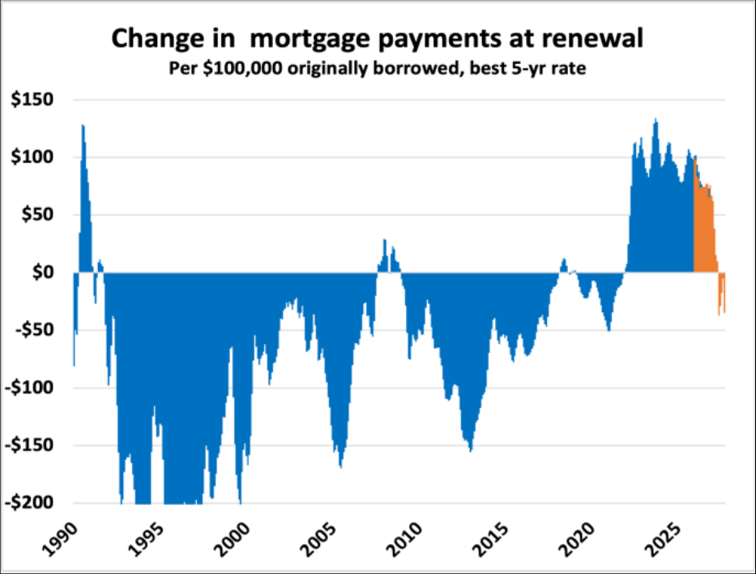
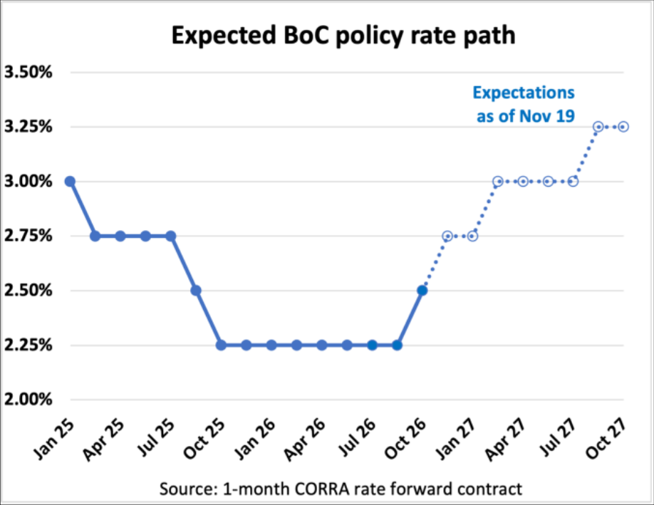
Renewing today costs about $73 more a month for every $100,000 originally borrowed. Ben has that gap going negative around June 2027, even with two more Bank of Canada hikes priced in before next summer.
Source and charts: The Weekly Edge, Nov 23, 2026, Edge Realty Analytics (edgeanalytics.ca). Orange bars are Ben's projection, built on the 1-month CORRA forward curve. Charts used with Ben's permission.
Borrowers keep picking variable.
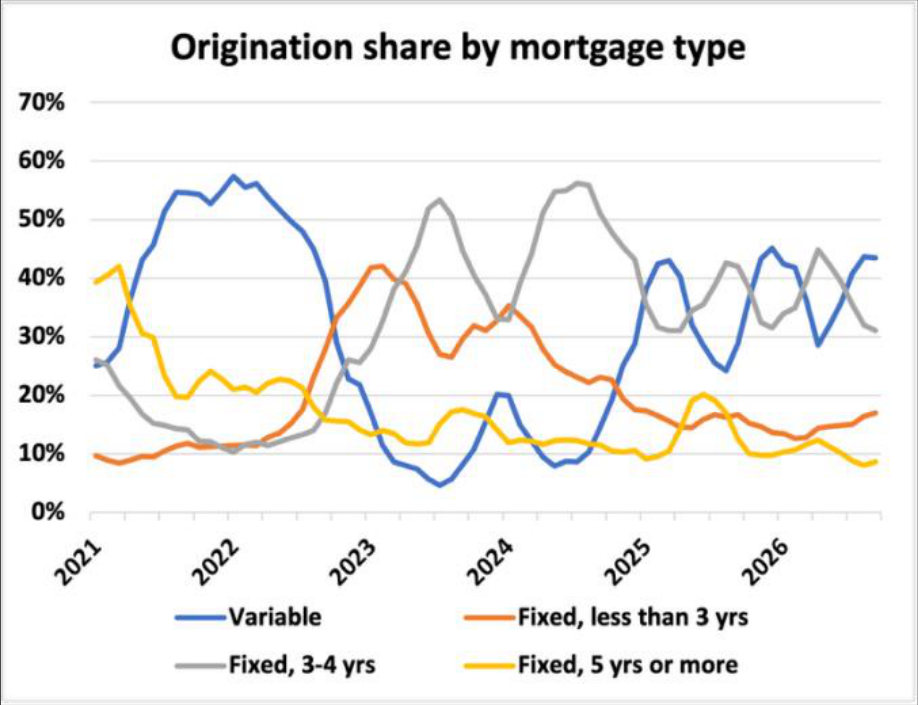
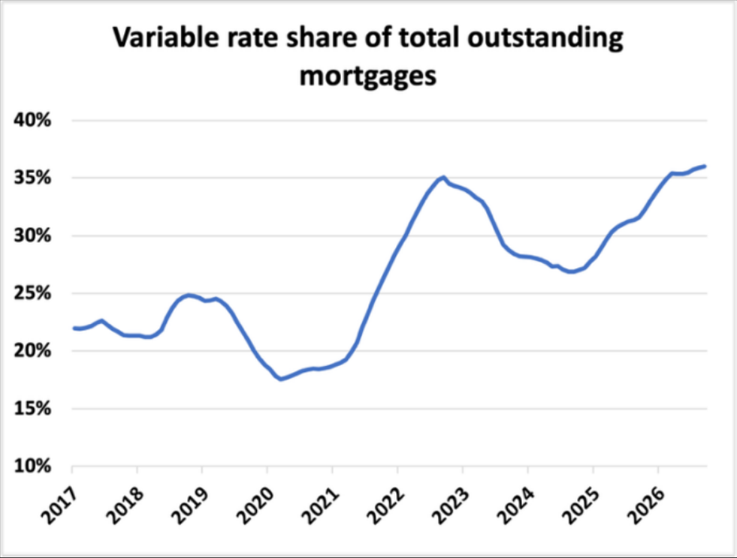
43% of September originations were variable. Only 9% were 5-year fixed. Floating-rate debt is now a record 36% of all mortgages outstanding.
Source and charts: The Weekly Edge, Nov 23, 2026, Edge Realty Analytics (edgeanalytics.ca), from Bank of Canada data. Charts used with Ben's permission.
A 5-year fixed still costs 80+ bps more than variable.
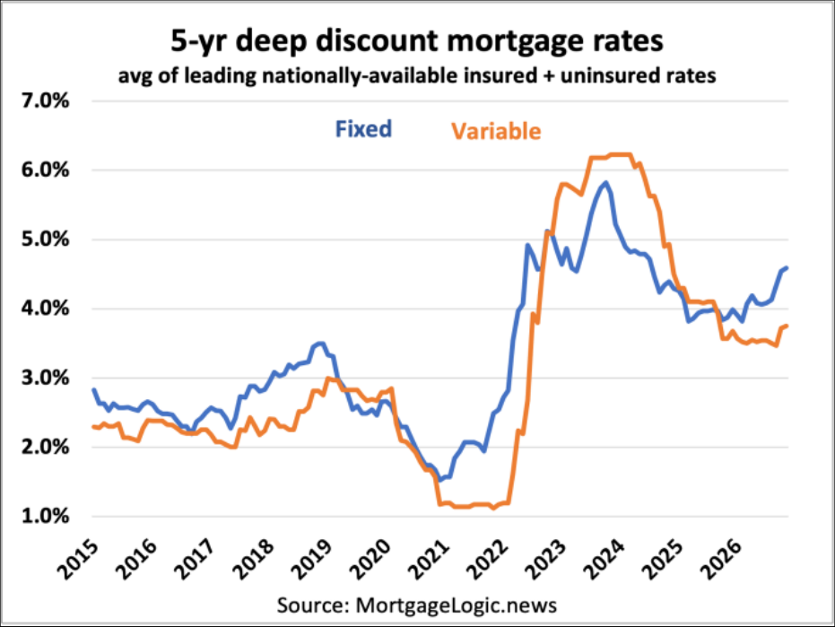
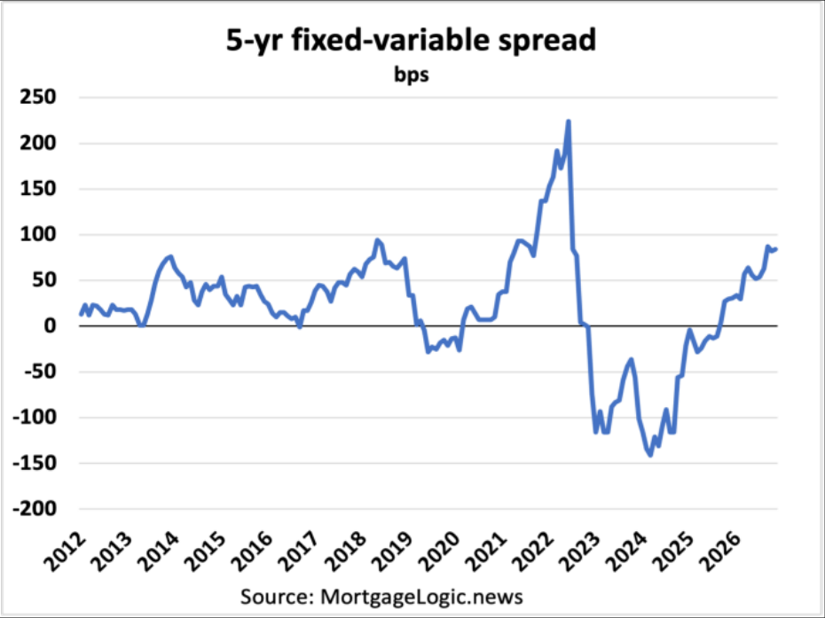
That's after the last Bank of Canada hike. While fixed carries that premium, I expect borrowers to keep floating.
Source and charts: The Weekly Edge, Nov 23, 2026, Edge Realty Analytics (edgeanalytics.ca), from MortgageLogic.news. Charts used with Ben's permission.
OSFI wants small lenders to compete with the Big Six.
Proposed risk weight for small and mid-sized banks and federal credit unions. Borrower needs a credit score above 720.
Half the capital for the same loan. That frees up room to lend and to price against the Big Six, who hold over 90% of banking assets.
It wouldn't start until late 2027 or early 2028. What I care about is the direction. OSFI spent ten years tightening mortgage credit and is now loosening it. Ben asks if B-20 is next. I'd bet yes.
Source: The Weekly Edge, Nov 23, 2026 (Edge Realty Analytics); OSFI, draft Capital Adequacy Requirements Guideline (2028) letter. Read OSFI's letter for the exact conditions before quoting them on air.
October housing: up a hair on the month, down on the year.
| Sales | New listings | Active listings | MLS HPI | |||||
|---|---|---|---|---|---|---|---|---|
| y/y | m/m sa | y/y | m/m sa | y/y | m/m sa | y/y | m/m sa | |
| Canada | −10.6% | +0.3% | −5.4% | +0.8% | +2.4% | +0.5% | −3.1% | +0.1% |
| BC | −11.0% | +0.1% | −12.5% | +0.4% | −3.8% | +2.0% | −4.4% | −0.2% |
| Alberta | −10.5% | −0.6% | −4.8% | −2.3% | +4.3% | +0.9% | −0.6% | −0.1% |
| Ontario | −8.7% | +1.7% | −8.8% | +3.1% | −4.8% | −0.6% | −3.8% | −0.2% |
| Quebec | −12.6% | −0.8% | +6.2% | −2.4% | +22.2% | +1.5% | +2.2% | +1.4% |
Ontario carried the monthly sales gain by itself. Quebec is the outlier everywhere else: more listings, more inventory, and a price jump that doesn't fit.
Source: The Weekly Edge, Nov 23, 2026 (Edge Realty Analytics), from CREA. I checked the sales, listings and inventory columns against CREA's October release. They match within 0.1 point, except BC new listings, where my pull shows −11.9%.
2026 is the slowest year for home sales on this chart.
Sales through October. That's below every year back to 2005, including 2008 and 2023.
Same point last year: 409,827.
Source: The Weekly Edge, Nov 23, 2026 (Edge Realty Analytics), which has sales trending at 25-year lows.
Rebuilt from CREA residential unit sales, not seasonally adjusted, national total summed from boards, January 2005 to October 2026.
Inventory is shrinking in BC and Ontario. Quebec is going the other way.
BC −3.8% y/y
Alberta +4.3% y/y
Ontario −4.8% y/y
Quebec +22.2% y/y
Ben ties the BC and Ontario decline to new completions collapsing. Fewer finished condos means fewer of them hitting the MLS.
Source: The Weekly Edge, Nov 23, 2026 (Edge Realty Analytics).
Rebuilt from CREA active listings, seasonally adjusted, January 2010 to October 2026. Year-over-year figures use actual (unadjusted) listings.
Quebec sellers are showing up.
- New listings, October y/y+6.2%
- Active listings y/y+22.2%
- Sales y/y−12.6%
New listings fell everywhere else. Quebec was the last hot market in the country, and this is what the turn looks like.
Source: The Weekly Edge, Nov 23, 2026 (Edge Realty Analytics).
Rebuilt from CREA new listings for Quebec, not seasonally adjusted, 12-month rolling sum to October 2026 (153,759).
Fewer than half of new listings are selling.
The lowest since April, per Ben.
A ratio under 50% is a buyer's market in most of the country. Prices don't rise in that.
Source: The Weekly Edge, Nov 23, 2026 (Edge Realty Analytics), from CREA and Haver Analytics.
Rebuilt from CREA sales-to-new-listings ratio, seasonally adjusted, 3-month average, national figure computed from boards, to October 2026. My single-month October reading is 48.75%.
National prices rose 0.1%. All of it was Quebec.
Quebec's 1.4% is its biggest monthly gain since early 2022, in a month when its market balance got worse.
Ben calls it highly suspicious and expects a revision lower. So do I.
- National HPI vs peak, nominal−21%
- After inflation−37%
Source: The Weekly Edge, Nov 23, 2026 (Edge Realty Analytics), from CREA's MLS Home Price Index, seasonally adjusted. Bars use the five monthly figures in Ben's table. Hamilton, Kitchener, London and Toronto are down the most from peak on his chart. Montreal and Quebec City are at their peaks.
Prices are 21% below peak. After inflation, 37%.
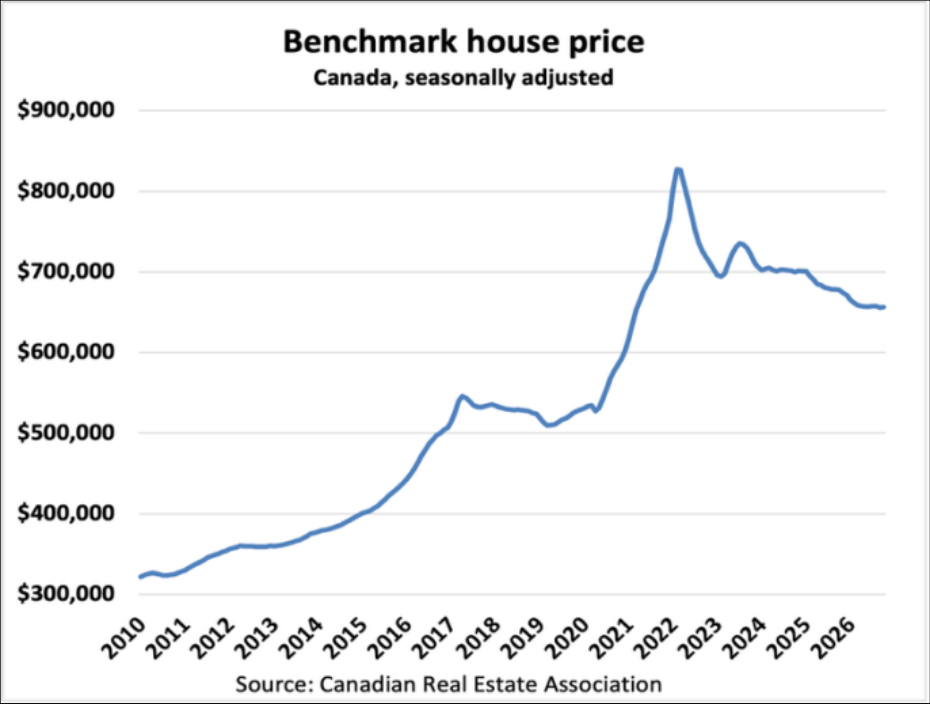
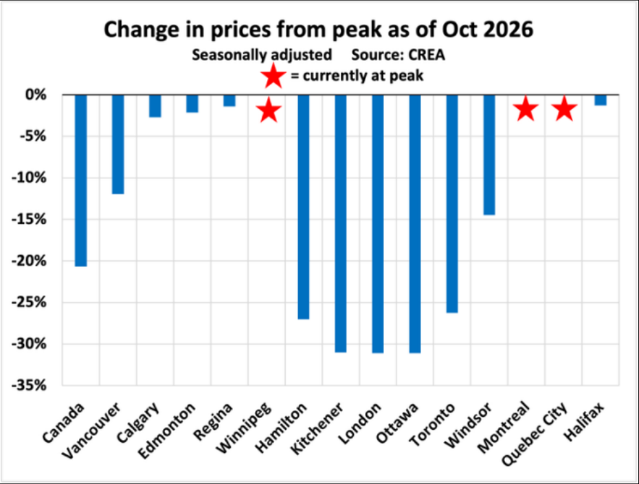
Hamilton, Kitchener, London and Toronto are down the most. Montreal and Quebec City are still at their peaks. That's why Quebec's listings matter so much right now.
Source and charts: The Weekly Edge, Nov 23, 2026, Edge Realty Analytics (edgeanalytics.ca), from CREA. Charts used with Ben's permission.
Consumer insolvencies are the highest since 2009.
- Canada filings, y/y+1.3%
- Ontario filings, y/y+6.3%
- Debt in those filings, y/y+18%
Per capita, filings are only back to the long-run norm. Ben thinks this cycle has a long way to run.
Source: The Weekly Edge, Nov 23, 2026 (Edge Realty Analytics). The +18% covers liabilities in consumer filings in BC, Alberta, Ontario and Quebec.
Rebuilt from Office of the Superintendent of Bankruptcy monthly consumer filings, 12-month rolling sum, to August 2026 (146,135). Ben's figures are for September.
Filings look normal. The debt doesn't.
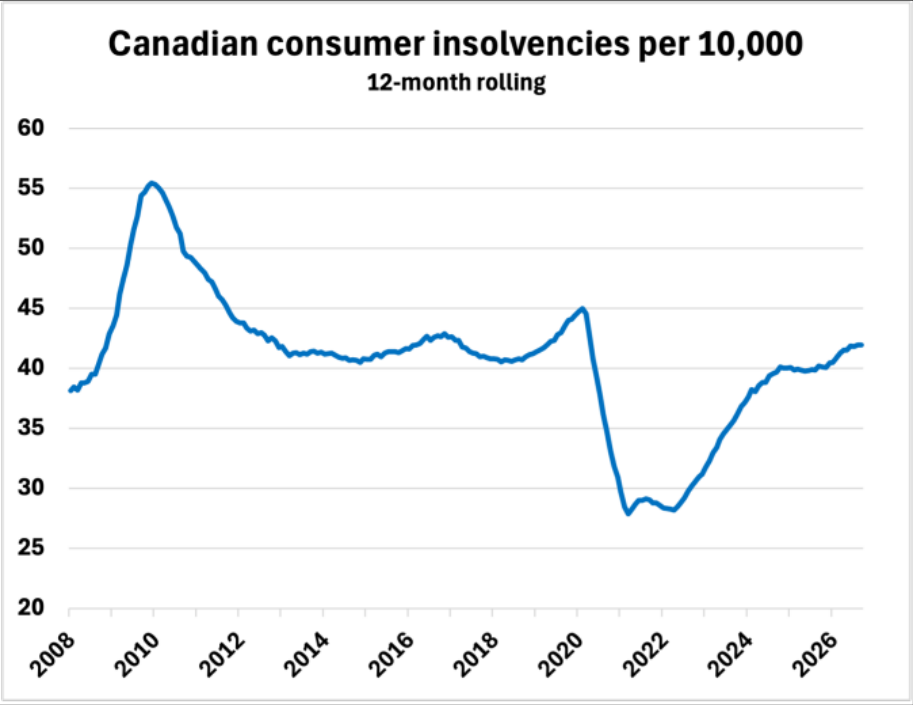
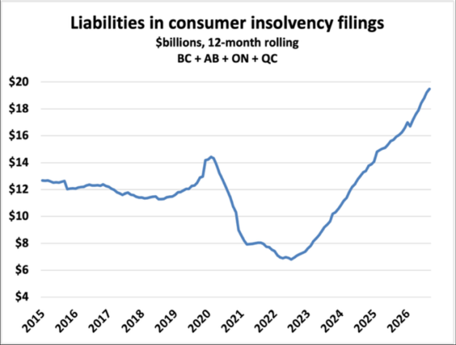
Per 10,000 people, filings are only back to the long-run norm. The debt in those filings is up 18% in a year and well past the 2020 high.
Source and charts: The Weekly Edge, Nov 23, 2026, Edge Realty Analytics (edgeanalytics.ca), from OSB data. Liabilities cover BC, Alberta, Ontario and Quebec. Charts used with Ben's permission.
In Ontario, the debt behind the filings is 3x pre-COVID.
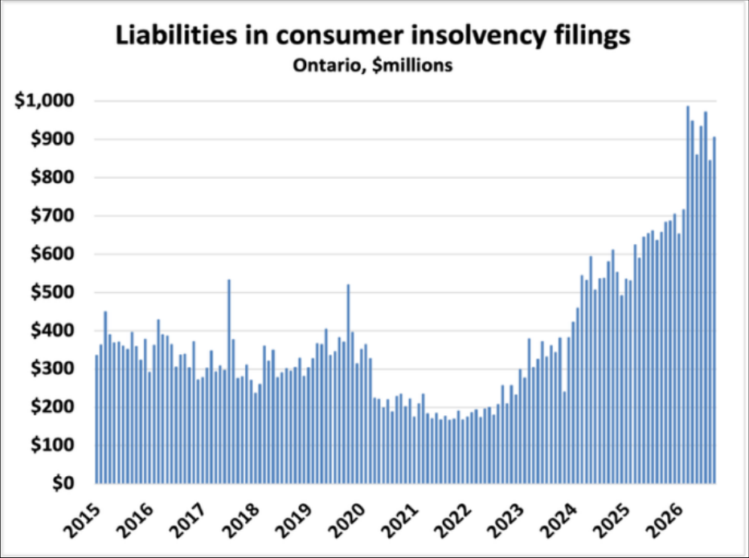
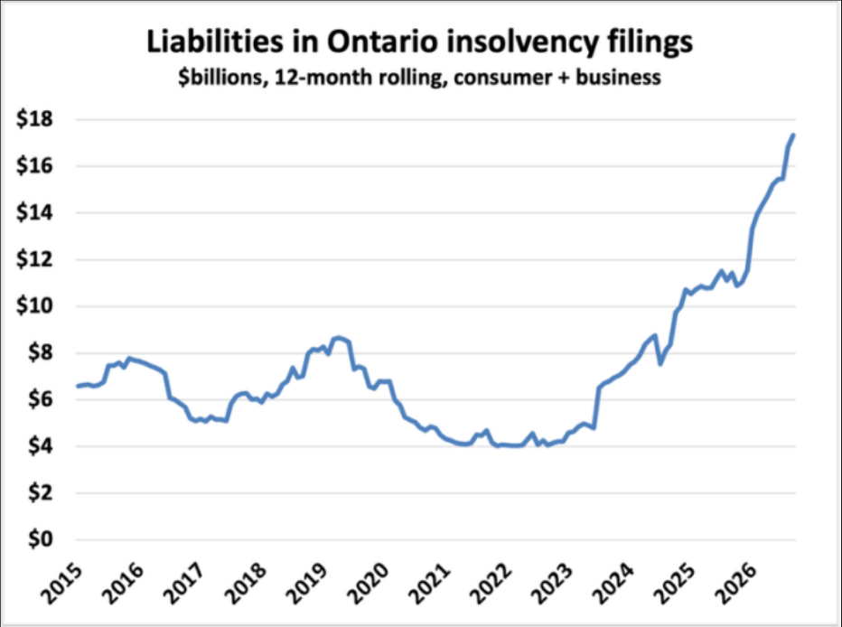
Debt in Ontario consumer filings rose 38% y/y in September. Business filings were up 11.7% and their liabilities 65%. One trustee, Baigel Corp, says median unsecured debt among its Toronto consumer-proposal clients went from $29,755 to $40,426 this year.
Source and charts: The Weekly Edge, Nov 23, 2026, Edge Realty Analytics (edgeanalytics.ca), from OSB data; Baigel Corp press release (first nine months of 2026 vs 2025, its own clients only). Charts used with Ben's permission.
Business insolvencies are turning back up.
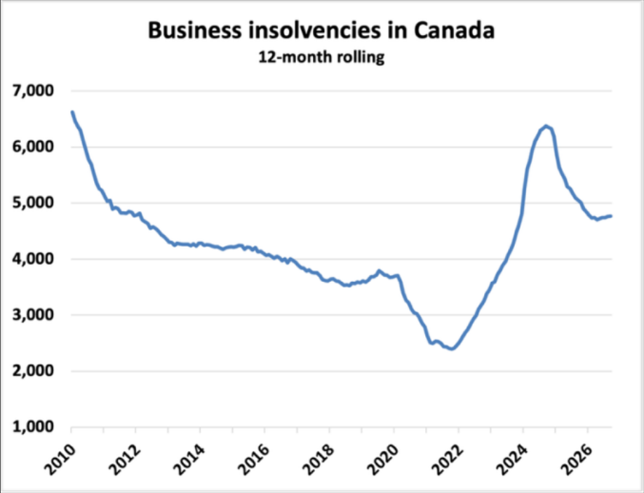
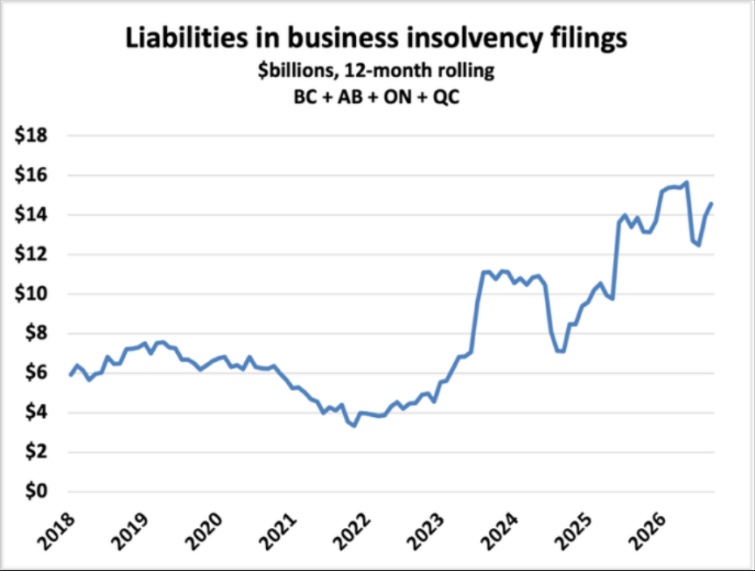
Filings rose 2.5% y/y in September after falling from the 2024 peak. The liabilities in them jumped 60.2%.
Source and charts: The Weekly Edge, Nov 23, 2026, Edge Realty Analytics (edgeanalytics.ca), from OSB data. Charts used with Ben's permission.
Builders have stopped building homes to sell.
Down 2.0% on the month.
Rental is the only segment still growing. It now outpaces homeowner and condo starts combined.
Source: The Weekly Edge, Nov 23, 2026 (Edge Realty Analytics), from CMHC.
Rebuilt from CMHC starts by intended market via Statistics Canada, 12-month rolling sums, to September 2026. "Homeowner" is freehold built for sale, close to but not the same as Ben's single-family line, and his chart covers census metropolitan areas only.
Single-family starts are back to the mid-1990s.
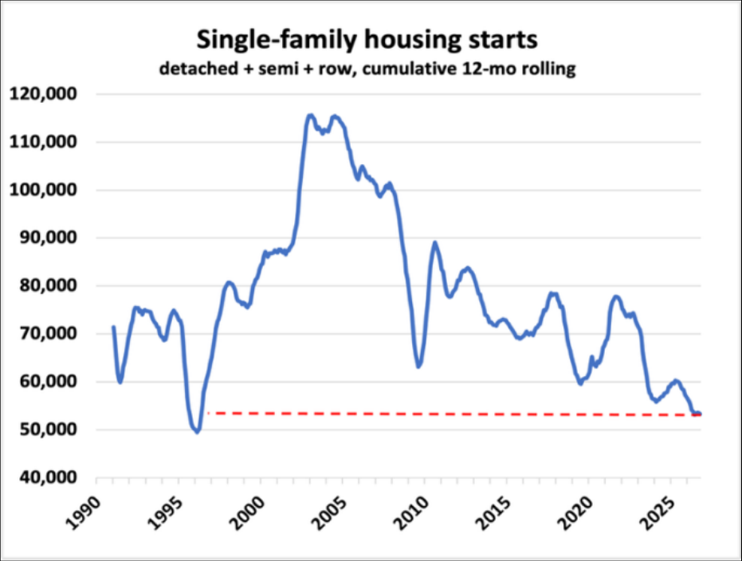
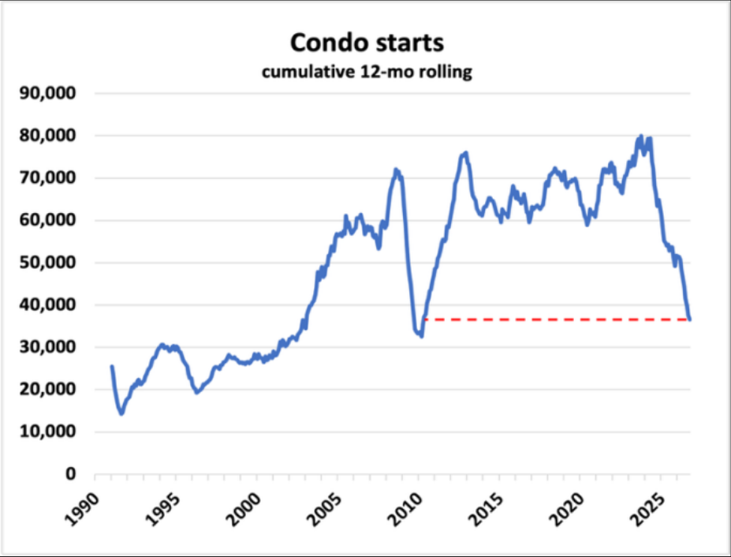
Condo starts are closing in on the financial-crisis low. Ben's point: with this little being built to own, it's hard to stay too bearish on house prices.
Source and charts: The Weekly Edge, Nov 23, 2026, Edge Realty Analytics (edgeanalytics.ca), from CMHC. Charts used with Ben's permission.
Rental is not replacing condos. It's adding to them.
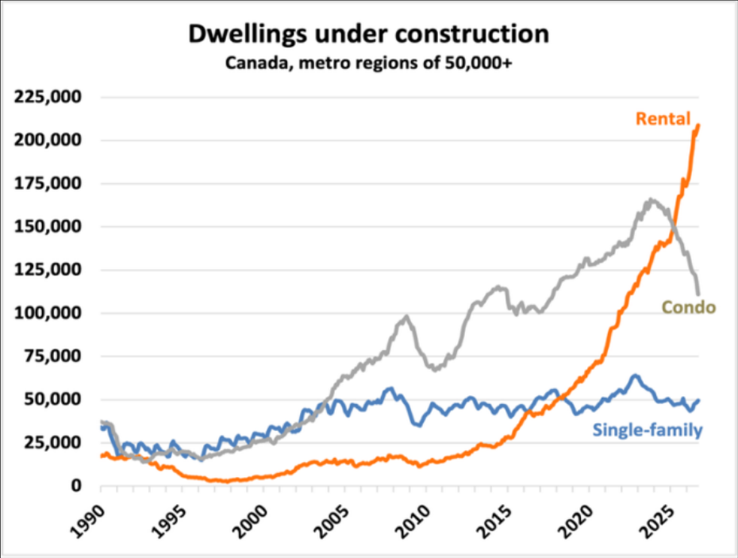
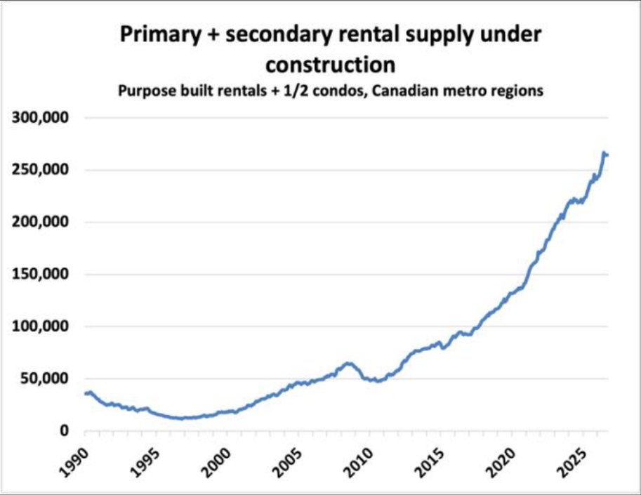
Count every purpose-built rental plus half the condos under construction and close to 270,000 rental units are on the way, a record. Budget 2026 hasn't kicked in yet, and it opens rental financing to private insurers and to 3- and 4-unit projects.
Source and charts: The Weekly Edge, Nov 23, 2026, Edge Realty Analytics (edgeanalytics.ca), from CMHC. Half of condos is Ben's estimate of the share that ends up as long-term rentals. Charts used with Ben's permission.
Nearly 22,000 finished homes are sitting unsold. That's a record.
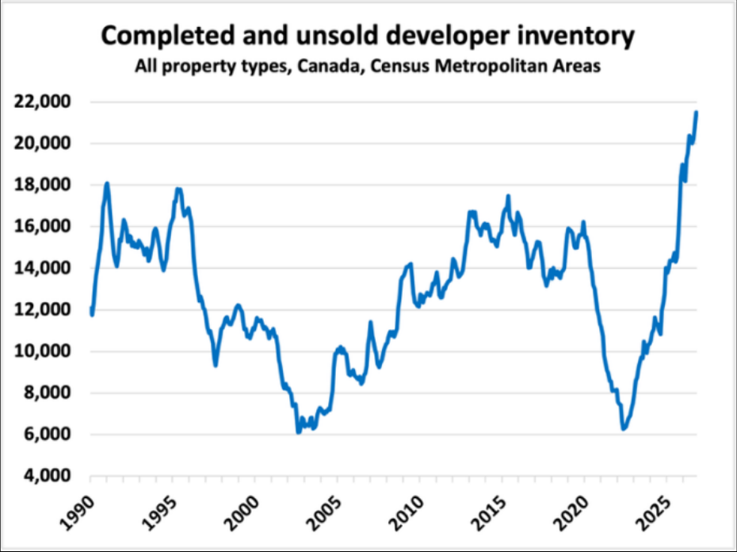
Up from about 6,000 in 2022. It has passed the early-1990s peak.
It's rising in nearly every metro. Vancouver and Calgary are climbing fastest. No wonder developers aren't launching.
Source and chart: The Weekly Edge, Nov 23, 2026, Edge Realty Analytics (edgeanalytics.ca), from CMHC. The 2022 low and early-1990s peak are read from the chart. Charts used with Ben's permission.
Vancouver and Calgary are piling up the fastest.
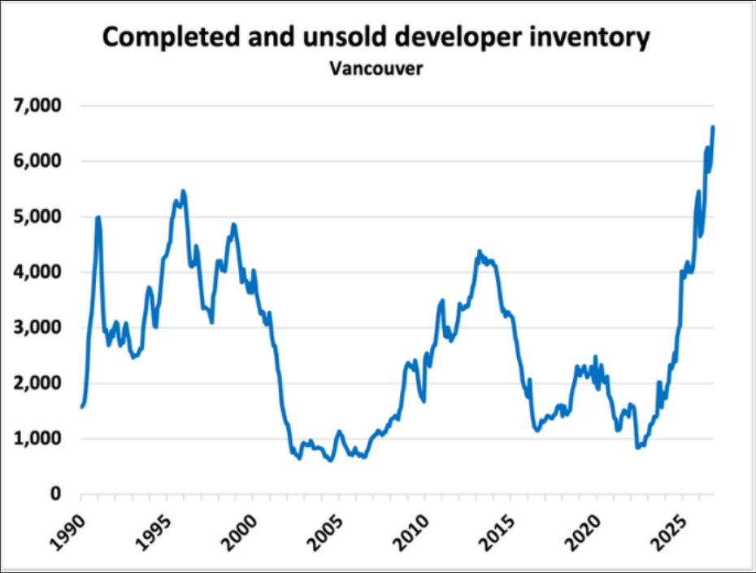
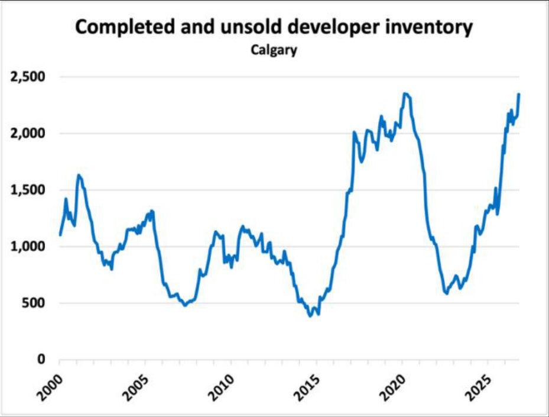
Vancouver has more unsold new homes than at any point on this chart, which goes back to 1990. Calgary is back at its 2018 to 2019 highs.
Source and charts: The Weekly Edge, Nov 23, 2026, Edge Realty Analytics (edgeanalytics.ca), from CMHC. Comparisons to earlier peaks are read from the charts. Charts used with Ben's permission.
Ontario homeowners are falling behind on property tax.
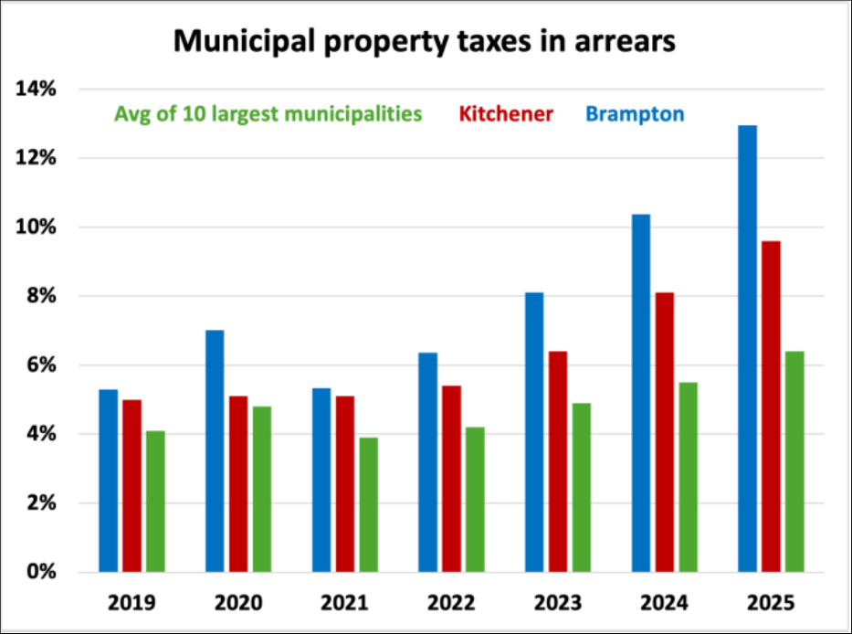
- Ontario arrears rate, highest since2001
- Brampton, per Better Dwelling's headline11.9%
People skip the tax bill before they skip the mortgage.
I read this as an early warning for Ontario mortgage delinquencies.
Source and charts: The Weekly Edge, Nov 23, 2026, Edge Realty Analytics (edgeanalytics.ca); Better Dwelling, "Ontario Property Tax Arrears Hit 24-Year High", from Government of Ontario data. Ben's Brampton bar for 2025 reads higher than 11.9%. Check which measure you're quoting. Charts used with Ben's permission.
September retail sales were a gas-price story. October looks bad.
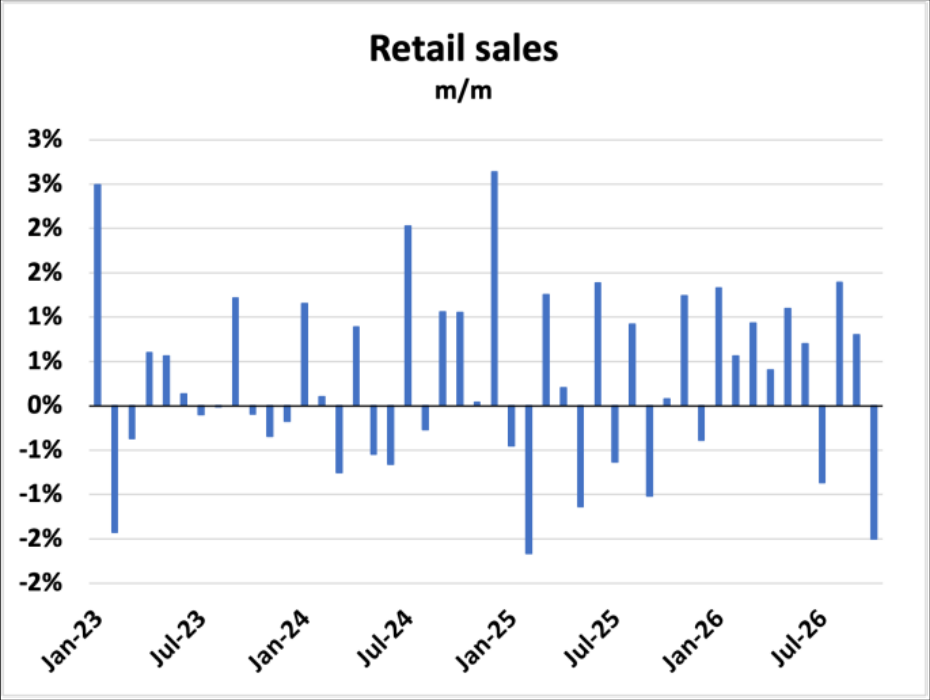
- September retail sales, m/m+0.8%
- Gasoline sales+6.9%
- Core, ex autos and gas+0.1%
- October advance estimate−1.5%
Core was flat after prices. If October holds, it's the second-steepest monthly drop in four years.
Source and charts: The Weekly Edge, Nov 23, 2026, Edge Realty Analytics (edgeanalytics.ca), from Statistics Canada retail trade, September 2026, and its advance indicator for October. Charts used with Ben's permission.
Real aggregate wages are shrinking.
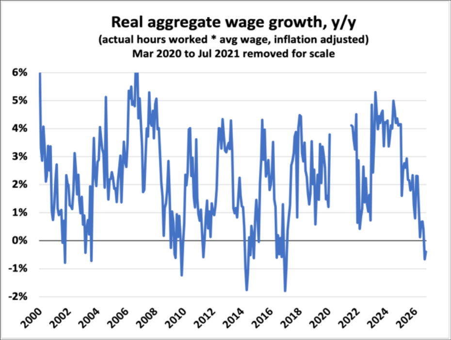
This is hours worked times the average wage, after inflation. It tells you how much spending power is in the economy.
It has gone negative year over year. Ben expects consumer spending to follow. So do I.
Source and charts: The Weekly Edge, Nov 23, 2026, Edge Realty Analytics (edgeanalytics.ca). Ben removed March 2020 to July 2021 from the chart for scale. Charts used with Ben's permission.
Headline inflation is 3.1%. Core is 1.9%.
- Headline CPI, y/y3.1%
- Core (median and trim average)1.9%
- Of the headline that is gasoline1.2 pts
Pump prices fell from about $1.70 a litre at the start of November to under $1.40. The gap between headline and core should close fast.
Source: The Weekly Edge, Nov 23, 2026 (Edge Realty Analytics); pump prices from GasBuddy via Edge.
Rebuilt from Statistics Canada CPI all-items (table 18-10-0004-01) and CPI-median and CPI-trim (table 18-10-0256-01), to October 2026. October: median 2.0%, trim 1.8%.
Rent inflation is under 2% for the first time since 2021.
It was 2.7% in September and 8.6% at the peak in August 2024.
Slower rent growth is finally in the CPI. With 270,000 rental units still under construction, I don't see it turning back up soon.
Source: The Weekly Edge, Nov 23, 2026 (Edge Realty Analytics).
Rebuilt from Statistics Canada CPI, rented accommodation (table 18-10-0004-01), year-over-year, to October 2026 (1.75%).
Deposits are leaving. Business loans are growing.
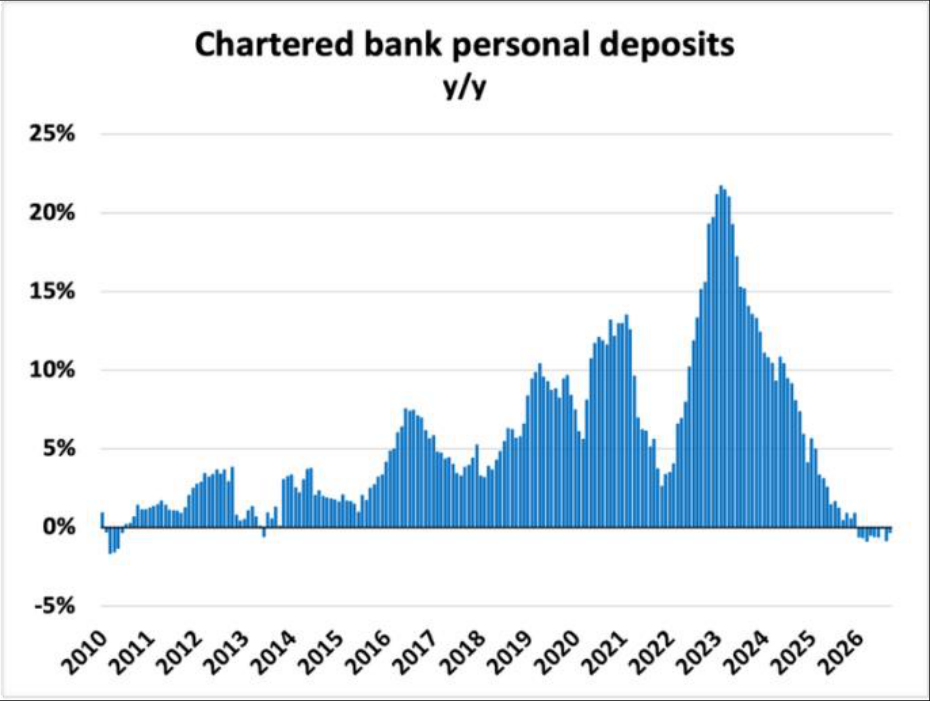
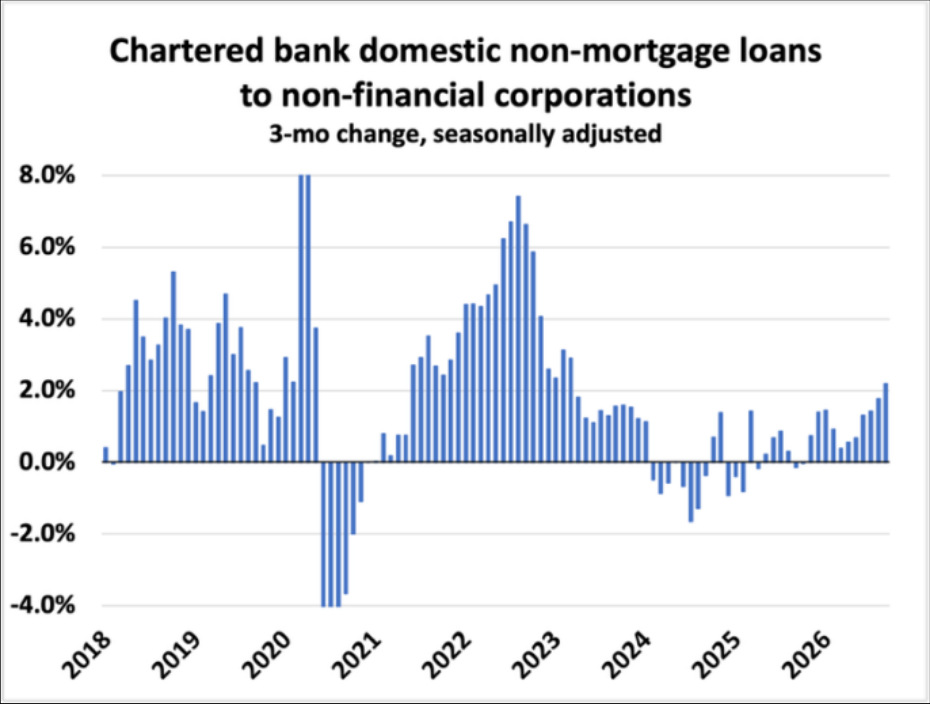
Personal deposits fell 0.2% in September, the third drop in four months. That's the banks' cheapest funding, so it puts a little upward pressure on mortgage rates. Business lending had its best three months since late 2022.
Source and charts: The Weekly Edge, Nov 23, 2026, Edge Realty Analytics (edgeanalytics.ca), from chartered bank balance sheet data for September 2026. Charts used with Ben's permission.
Four things I'm watching from here.
Quebec's HPI revision
A 1.4% monthly gain with inventory up 22% doesn't add up. If it gets revised down, national prices fell in October.
June 2027
That's when Ben has renewal payments turning lower. It takes a real drag off household spending.
The B-20 stress test
Mortgage growth at 3.6% and OSFI already easing capital rules. The case for keeping the test as is keeps getting weaker.
Ontario credit losses
Insolvency debt up 38%, tax arrears at a 24-year high, 22,000 unsold new homes nationally. Lenders with Ontario books feel this first.
These are my reads on the data in The Weekly Edge, Nov 23, 2026. They are not Ben's forecasts unless a slide says so. Not investment advice.
The analysis is Ben Rabidoux's. Go subscribe.
The Weekly Edge, Nov 23, 2026
Published by Edge Realty Analytics Ltd. for paid subscribers at edgeanalytics.ca. The report is restricted. Ben's charts appear here with his permission. Two third-party charts in the report (Better Dwelling, GasBuddy) are cited but not reproduced.
Public data, my build
CREA monthly statistics (October 2026). Statistics Canada tables 36-10-0639-01, 18-10-0004-01 and 18-10-0256-01. Bank of Canada lending data, OSB insolvency filings and CMHC starts via Statistics Canada. Some run a month behind Ben's charts, and each slide says so.
Nothing here is investment advice. Numbers are as published the week of Nov 23, 2026 and get revised.